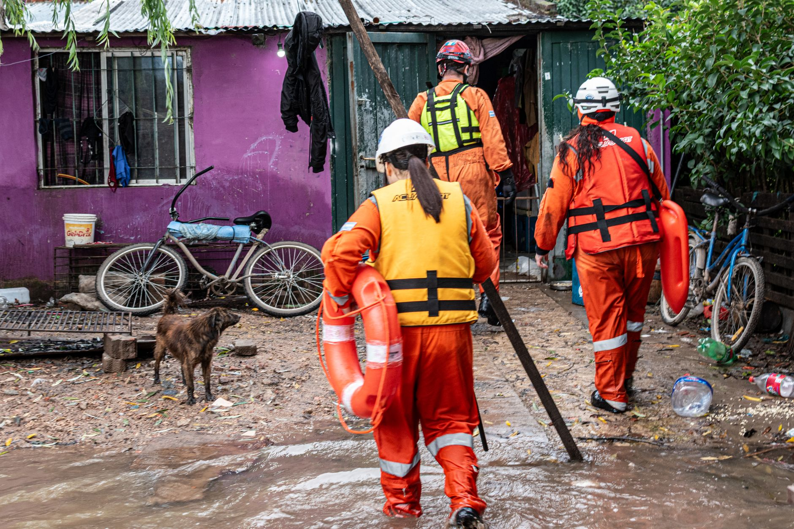

The sudden onset of the Nepal floods
The recent monsoon season in Nepal has brought unprecedented destruction to local communities. Intense rainfall triggered massive landslides and rapid river rises, turning peaceful valleys into zones of chaos within a matter of hours. As the water levels surged, many residents found themselves trapped by debris and rising currents, unable to reach higher ground.
The scale of the flooding was particularly severe in mountainous regions where the geography makes evacuation extremely difficult. Infrastructure was washed away, leaving several villages isolated from emergency services. Among the many stories of loss, one specific incident involving a group of people trapped in a tunnel has captured the attention of the entire world.
A desperate situation inside the tunnel
As the floodwaters rushed through the valley, a group of individuals sought refuge in a nearby tunnel. What they thought would be a temporary shelter quickly became a claustrophobic trap. The entrance became blocked by heavy sediment and large rocks carried down by the torrent, leaving the survivors in total darkness with dwindling oxygen and rising moisture levels.
The psychological toll on those inside was immense. They were forced to wait in silence, listening to the roar of the water outside, unsure if help would ever arrive. The lack of communication meant that for the first several hours, rescue teams were unaware that anyone was even trapped within that specific section of the mountain.
It was layer upon layer of miracles that kept us breathing when the darkness felt absolute.
The heroic rescue operations
Once the location of the survivors was identified through local intelligence and thermal scanning, the rescue mission began. It was an incredibly dangerous task, as the ground around the tunnel entrance was unstable and prone to further landslides. Rescue workers had to navigate through thick mud and freezing water to reach the site.
The operation involved several key stages to ensure the safety of both the rescuers and the victims:
Overcoming the odds through teamwork
The success of the mission was not just down to technology, but to the sheer determination of the local emergency responders and international volunteers. Every inch of progress was hard-won. As rescuers dug deeper, they encountered unexpected obstacles, including narrow passages and pockets of trapped gas, which required constant monitoring and extreme caution.
Despite the physical exhaustion, the team worked in shifts around the clock. The coordination between local villagers, who provided vital knowledge of the terrain, and the professional rescue units, created a seamless response that saved lives that would otherwise have been lost to the elements.
Lessons learned from the disaster
The Nepal tunnel rescue serves as a grim reminder of the increasing volatility of weather patterns in the Himalayan region. Climate change is making monsoon seasons more unpredictable and violent, necessitating better early warning systems and more robust disaster management protocols.
Experts are now calling for several improvements to prevent such tragedies in the future:
A community in recovery
While the rescue of the tunnel survivors is a moment of triumph, the broader community in Nepal continues to face a long road to recovery. Homes have been destroyed, livestock lost, and livelihoods upended by the floods. The emotional scars of the disaster will remain long after the water recedes.
As the world watches the rebuilding efforts, it is important to recognize the resilience of the people. Much like how global transport routes face challenges, such as when we reported on how Smuggling Gangs Switch to Mega-Dinghies in Channel, these environmental crises force humanity to adapt and innovate in the face of overwhelming pressure. The spirit of survival seen in the Nepal tunnels will undoubtedly drive the recovery of these mountain communities.
See Also
If you enjoyed this Current Events article, check out Smuggling Gangs Switch to Mega-Dinghies in Channel for more useful reading.